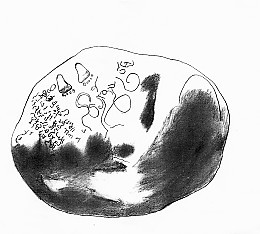

Lokasi: Kamar Khusus Kementerian Kopi Sastra
Waktu: Pertengahan 2009

"Cuk cuk, mbangun ayo Cuk!!!" Hari masih pagi saat Menteri Perhubungan Kopi Sastra dikejutkan teriakan Menteri Dalam Negeri Kopi Sastra.
"Aaaahhhh. Lo yang diancuk!! Gue masih 'morning glory' nih, mimpi maen film bareng Miyabi. Ganggu aja lo, bego," ujar Menhub gusar.
Berhubung ini suasana sedang darurat, Mendagri yang panik langsung menyeret Menhub dari ranjangnya. Kain polkadot yang menyelimuti tubuh bagian bawah Menhub langsung tersibak. Tampak pemandangan agak kurang enak terpampang di sana; Sprei yang basah dan ruapan apak bau kolor Menhub warna pink yang mungkin masih berceceran sperma sisa-sisa mimpi basahnya semalam.
"Heh, kadut! Ga sopan banget sih!"
"Ini lho Cuk, itu, si anu, aa aa aa.."
"Apa? Gelo siah. Pagi-pagi udah mao nyari ribut lhu sama gue?? Hah!!!"
Bukan salah Mendagri juga yang panik dan bertingkah tak sopan seperti itu kepada Menhub. Pasalnya, selepas bagun tidur dan kencing di toilet kerajaan, ia menemukan Presiden mereka pingsan dalam keadaan tertawa di singgasananya.
Dikabari hal darurat begitu, mereka berdua berhenti bertengkar dan langsung ngacir ke singgasana. Kebetulan, Menteri-menteri Kopi Sastra yang lain saat itu juga hendak siap-siap ke ruang rapat.
Rencananya rapat hari itu mereka bakal membahas soal rancangan agenda belanja rutin mereka yang makin hari makin menunjukkan perilaku konsumerisme berlebihan seluruh penghuni kerajaan. Tapi melihat Presidennya ketimpa musibah begini, agaknya rapat bakal ditunda sampai ada keputusan resmi.
Mendagri yang masih kucel dan belekan, berdiri terpaku menatap tubuh kaku sang Presiden. Ia merasa kecolongan. Sebagai Menteri Dalam Negeri, pastilah ia jadi satu-satunya pejabat kerajaan yang wajib bertangung jawab atas semua peristiwa di dalam lingkup kerajaan Kopi Sastra. Termasuk juga peristiwa ini.
Adakah Presiden kita diracun semacam obat tawa yang berbahaya? Gumam Mendagri dalam hati. Tapi siapa pelakunya yang bisa sekeji ini? Adakah pihak-pihak yang tidak senang dengan kerajaan Kopi Sastra, sehingga tega meracun Presiden mereka tercinta?
Rasa-rasanya tidak, Mendagri menyimpulkan.
Ataukah ini bagian dari konspirasi menteri-menteri Kopi Sastra lain yang tidak senang dengan dirinya, sehubungan dengan desas-desus di luar istana yang mulai mencium tindak korup anggaran belanja Departemen Dalam Negeri pimpinannya?
Ada kemungkinan ke arah situ memang, Mendagri mulai curiga. Tapi ia ragu. Pasalnya Menteri-menteri lain juga sama korupnya seperti dirinya. Membongkar satu kasus, sama saja mereka bongkar borok mereka sendiri. Dan bukankah skenario penghancuran Komisi Kopi Pengusut Korupsi (KKPK) yang digagasnya sendiri tengah berlangsung dengan sukses sekarang? Presiden Kopi memang tidak tahu-menahu soal hal ini.
Namun tiba-tiba Mendagri ingat sesuatu. Dia ingat bagaimana belakangan hari ini Presiden tengah dirundung resah yang entah apa. Presiden hanya menyebut-nyebut sebuah nama: Radnan Akyara.
Maka dengan bantuan intelijen Kopi dan kesepakatan menteri Kopi Sastra yang lain, nama ini segera diusut. Dan nama ini ternyata merujuk pada sebuah url dengan alamat http://prysprys.wordpress.com yakni sebuah blog pribadi yang tampaknya dirahasiakan oleh pemiliknya.
Belum suskes begitu saja, mereka mendapati halaman muka blog ini tertulis pesan:
Protected: NULL
February 4, 2009
This post is password protected.
To view it please enter your password below
Tampaknya memang, informasi yang ada di blog ini terkunci password tertentu. Tapi ini bukan hal sulit bagi mereka untuk membongkarnya. Dengan batuan software hacking sederhana yang dibuat para IT Kopi Sastra, dalam beberapa menit muncul kombinasi angka password blog ini.
cop666des
Diketikkannya pasword yang entah merujuk pada apa ini, dan lalu submit. Login pun sukses. Semua menteri yang ada di sana bersorak sorai. Memuji kecanggihan teknologi yang mereka miliki, sekaligus tak sabar menanti informasi apa yang bakal mereka dapatkan di sana.
Lanjutkan!